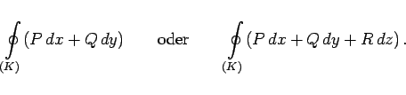
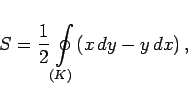

Inhalt Index DeskTop Bronstein

 Integralrechnung Kurvenintegrale Kurvenintegrale allgemeiner Art
Integralrechnung Kurvenintegrale Kurvenintegrale allgemeiner Art


|  | (8.122) |
Im allgemeinen ist das Umlaufintegral verschieden von Null. Das gilt jedoch nicht, wenn die Integrabilitätsbedingung erfüllt ist oder wenn die Integration in einem konservativen Feld durchzuführen ist. Siehe auch Verschwinden des Umlaufintegrals.
|  | (8.123) |
wobei K die Randkurve der ebenen Figur ist. Der Integrationsweg wird positiv gerechnet, wenn er entgegengesetzt zum Drehsinn des Uhrzeigers verläuft.